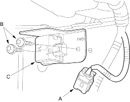
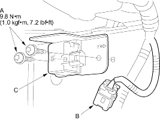

|
 CAUTION
CAUTION- Disconnect the negative battery cable and wait at least 3 minutes before beginning work.
- Remove the front inner fender (see page 20-121).
- Disconnect the engine compartment wire harness 2P connector (A) and remove the two Torx bolts (B) using a Torx T30 bit, then remove the front sensor (C).

|
- Install the new front sensor with new Torx bolts (A), then connect the engine compartment wire harness 2P connector (B) to the front sensor (C).

- Reconnect the negative battery cable.
- After installing the front sensor, confirm proper system operation: Turn the ignition switch ON (II): the SRS indicator light should come on for about 6 seconds and then go off.